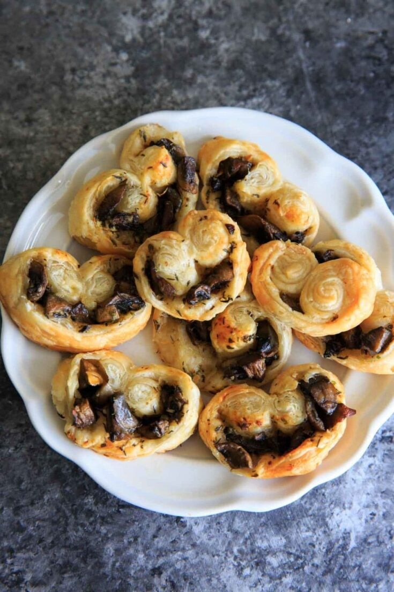

Odin Recipes
Savory Palmiers

Description
Savory Palmiers are elegant, flaky puff pastry appetizers shaped like delicate butterfly wings or palm leaves. Made by rolling puff pastry around flavorful fillings such as cheese, pancetta, or tapenade, these bite-sized snacks are crisp, buttery, and perfect for entertaining.
Easy to prepare using ready-made puff pastry, savory palmiers offer a delightful combination of textures and rich, savory flavors. They can be served warm or at room temperature, making them an ideal choice for parties, holiday gatherings, or casual snacking.
Ingredients
- 350 g puff pastry (ready rolled)
- 75 g finely grated Gruyère cheese
- 100 g smoked pancetta, thinly sliced
- 1 beaten egg (for brushing)
Steps
- Preheat the oven to 200°C (180°C fan/gas mark 6) and line baking sheets with parchment paper.
- Roll out the puff pastry on a lightly floured surface to a 25x35 cm rectangle if not already rolled.
- Brush the surface evenly with beaten egg.
- Sprinkle half of the grated Gruyère cheese over the pastry, covering it right to the edges.
- Lay the pancetta slices in a single layer on top of the cheese, then sprinkle the remaining cheese over the pancetta.
- Fold the two long edges of the pastry inward toward the center, then fold them again so they almost meet in the middle.
- Fold the pastry in half, pressing gently to seal. Use a little beaten egg if needed to stick the edges together.
- Wrap the folded pastry in plastic wrap and chill for 30 minutes.
- Remove from the fridge and slice the pastry roll into 1 cm thick slices.
- Place the slices spaced apart on the prepared baking sheets.
- Bake for 15 minutes, then carefully turn the palmiers over and bake for another 5–10 minutes until golden and crisp.
- Cool on a wire rack before serving.